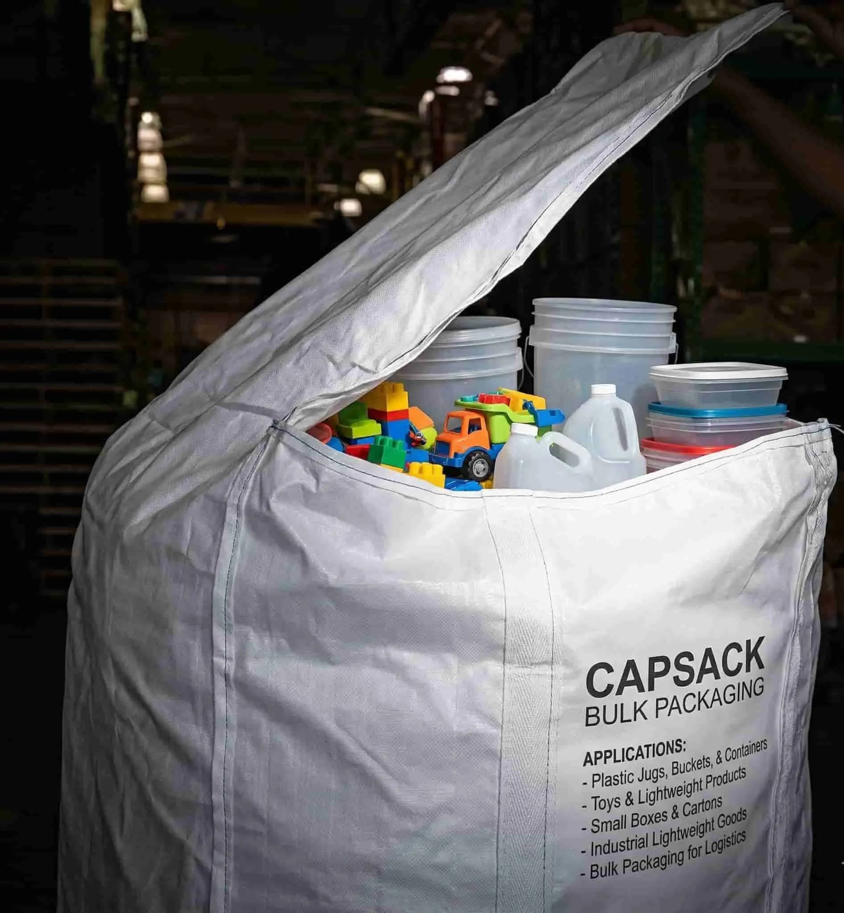
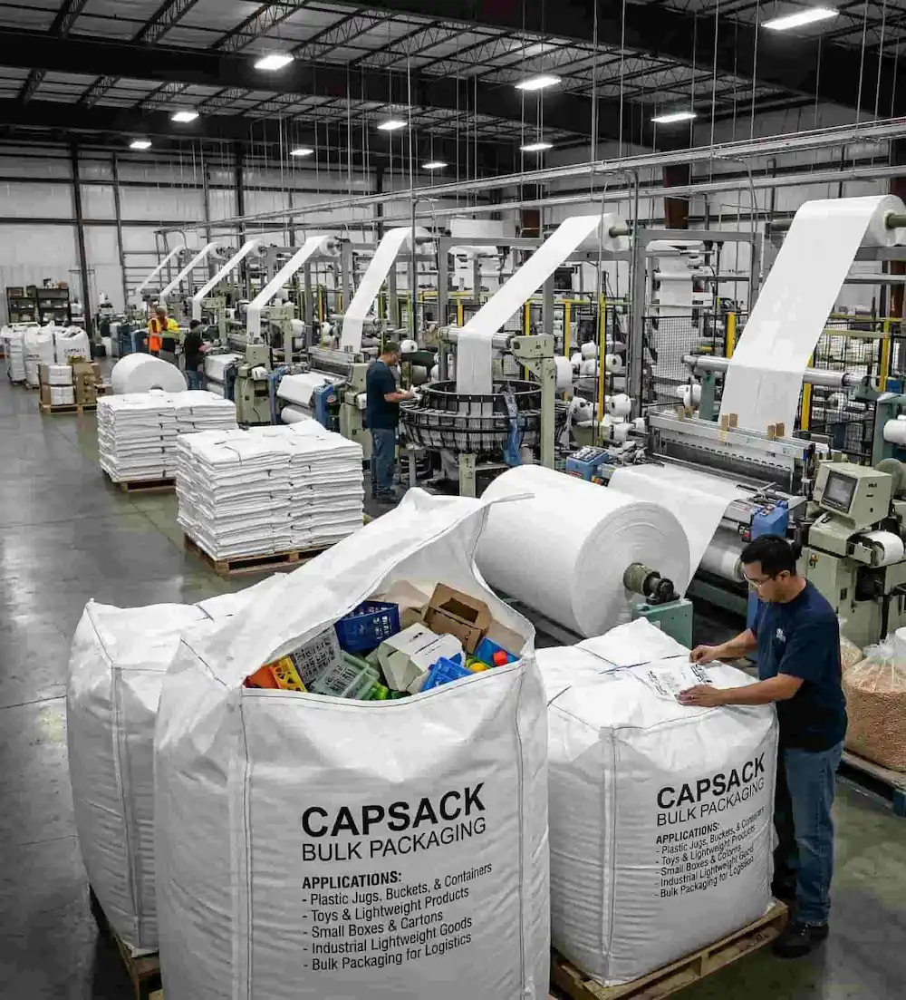

Capsacks (often searched as cap sacks or jumbo master woven sacks) are extra-large polypropylene woven bags built specifically for bulky, low-density products where volume matters more than raw weight. Instead of expensive corrugated boxes that eat up transport space and cost ₹80–₹150 per carton, manufacturers pack plastic wares, bottle caps, jugs, toys, and foam items directly into lightweight 40–80 GSM PP capsacks.

Standard Capsacks Sizes & Weight Chart
Choose standard dimensions or request custom cut lengths from our circular & flat loom production lines:
| Capsack Size (Width × Length) | Typical GSM Range | Est. Bag Weight | Popular Industry Use |
|---|---|---|---|
| 30" × 40" Inches | 45 – 65 GSM | 70g – 100g | PET bottles, bottle caps, pharmaceutical closures |
| 36" × 48" Inches | 50 – 70 GSM | 110g – 155g | Plastic jugs, mugs, household plasticware, toys |
| 40" × 56" Inches | 55 – 75 GSM | 155g – 215g | HDPE jerry cans, automobile plastic bumpers/parts |
| 44" × 56" Inches | 60 – 80 GSM | 190g – 250g | Large molded crates, drums, textile bales & export |
| 48" × 60" / 48" × 72" | 60 – 80 GSM | 220g – 340g | Over-sized cartons, travel luggage, foam rolls & bales |
Common Uses of Cap Sacks Across Industries
- Plastic Bottle & Cap Moulders: Blow-moulded PET bottles, HDPE gallon cans, screw caps, and closures.
- Plastic Household & Toys: Buckets, mugs, toys, kitchen containers, and lightweight consumer goods.
- Textile, Hosiery & Garment Bundles: Master outer sacks protecting packed cartons during pan-India road transport.
- Bric-a-Brac & Export Cargo: High-volume dust protection for mixed export items and light freight.

Capsacks vs Standard PP Bags vs Cartons
| Feature | PP Capsacks (Cap Sacks) | Standard 50kg PP Bags | Corrugated Boxes |
|---|---|---|---|
| Primary Use | Bulky lightweight high-volume goods | Heavy dense grains, fertilizer, cement | Fragile / rigid retail cartons |
| Typical Size | 30×40" up to 48×72" | 18×28" to 24×40" | Boxed dimensions |
| Cost per Unit | Low per cubic foot | Lowest for heavy sacks | 3× to 5× higher cost |
| Closures | Open top, drawstring, or stitched | Chain stitched / heat sealed | Taped |
Need Box-Shaped Oversized Bags? Check our custom Jumbo Box Bags for rigid square/rectangular plastic packaging, or read our Lightweight Economy PP Bag Guide.
Get Best Bulk Rate for Capsacks (Cap Sacks)
Use our interactive bag weight & costing calculator with your exact inch dimensions (e.g., 44×56 at 60 GSM) or WhatsApp us for an instant Morbi factory quotation.